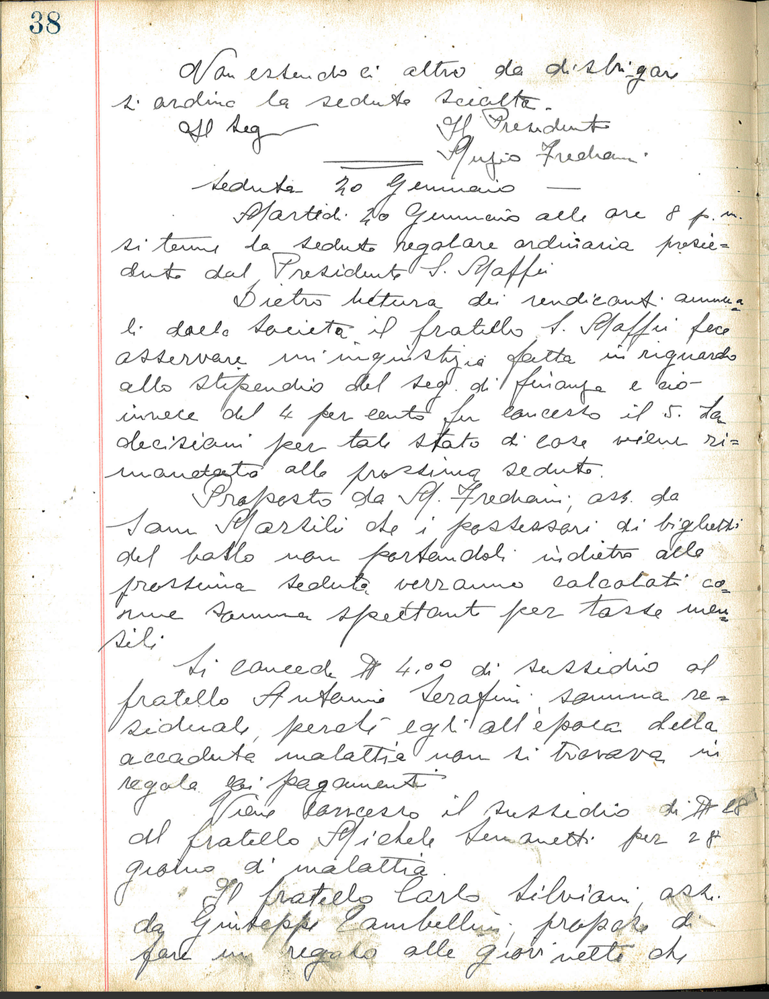Manuscript page number 38.
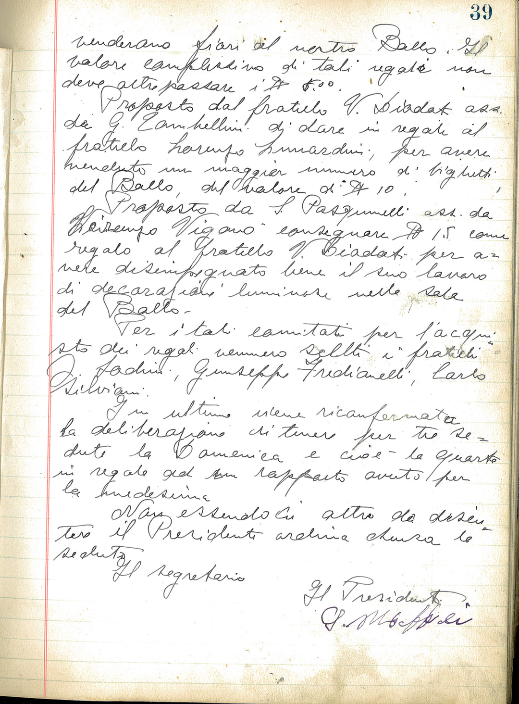Manuscript page number 39.
Martedi 20 Gennaio alle ore 8 p.m.
si tenne la seduta regolare
ordinaria presie-
duta dal Presidente S.
Maffei
Dietro lettura dei rendiconti annua-
li dalla
Societa Il fratello S. Maffei fece
osservare un’ingiustizia fatta in riguardo
allo stipendio del Seg. di finanza e ciò-
invece del 4 per cento
fu concesso il 5. La
decisioni per tale stato di cose viene ri-
mandato
alla prossima seduta.
Proposta da M. Frediani; ass. da
Sam Marsili de i
possesori di biglietti
del ballo non portandoli indietro alla
prossima seduta verranno calcolati co-
me somma spettanti per tasse
men-
sili
Si cancella $4.00 di sussidio al
fratello
Antonio Serafini, somma re-
siduale
perche’ egli all’epoca della
accaduta malattia non si trovava in
regola coi pagamenti
Viene concesso il sussidio di $28
al fratello Michele
Simonetti per 28
giorno di malattia.
Il fratello Carlo Silvioni ass.
da Giuseppe Tambellini propose
di
fare regalo alle giovinette che
venderano fiori al nostro Ballo. Il
valore complessivo
di tali regali non
deve oltrepassare i $ 5.00.
Proposto dal fratello V. Diodati ass.
da G. Tambellini
di dare in regale al
fratello Lorenzo Lunardini, per
avere
venduto un maggior numero di biglietti
del Ballo, del valore
di $ 10.
Proposto da S. Pasquinelli ass. da
Lorenzo Vigano’
consegnare $
15 come
regalo al
fratello V. Diodati per a-
vere disimpegnato bene il suo
lavoro
di decorazioni luminose nella sala
del Ballo.
Per i tali comitati per l’acqui-
sto dei regali vennero scelti i
fratelli
J. Sodini,
Giuseppe Fredianelli,
Carlo
Silvioni.
In ultimo viene riconfermata
la deliberazione di tenere per tre
se-
dute la Domenica e cioè la quarta
si regola ad un rapporto avuto
per
la medesima
Non essendoci altro da discu-
tere il Presidente ordina chiusa
la
seduta
Il Segretario Il Presidente
S. Maffei
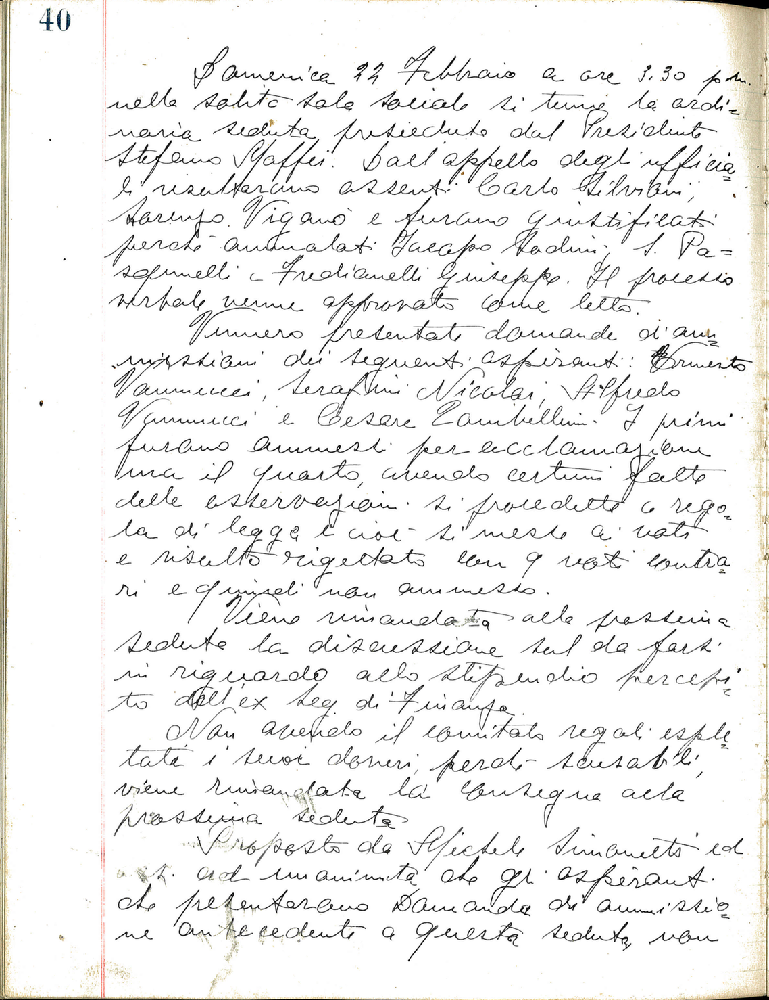Manuscript page number 40.
 Manuscript page number 41.
Manuscript page number 41.
Domenica 22 Febbraio a ore 3:30 p.m.
nella solita sala sociale
si tenne la ordi-
naria seduta presieduta dal
Presidente
Stefano Maffei.
Dall’appello degli ufficia-
li risultavano assenti
Carlo Silvioni,
Lorenzo Viganò
e furano giustificati
perche ammalati
Jacopo Sodini,
S. Pa-
squinelli
e Fredianelli Giuseppe.
Il processo
verbale venne approvato come letto.
Vennero presentate domande di am-
missioni dei seguenti
asperanti:
Ernesto
Vannucci,
Serafini Nicolai,
Alfredo
Vannucci
e Cesare
Zambellini.
I primi
furano ammessi per acclamazione
una il quarto, avendo
certini fatte
delle osservazioni si procedette a rego-
la di legga
e cioe’ si messe a voti
e risulto rigettato con 9 voti contra-
ri
e quindi non ammesso.
Viene rimandata alla prossima
seduta la discussione sul da
farsi
in riguardo allo stipendio percepi-
to dall’ex Seg. di Finanza.
Non avendo il comitato regali esple-
tati i suoi doveri, perche scusabili,
viene rimandata la consegna alla
prossima seduta.
Proposto da Michele Simonetti ed
ass. ad unanimita che gli asperanti
che presentarano
Domande di ammissio-
ne antecedente a questa seduta, non
presentandosi alla prossima seduta ver-
ranno annullate le
loro domande e
gil ascritti perderanno il diretto di
rimbarso della
moneta versato, giusto
nostre leggi
Fondo cassa a tutt’oggi $
Non avendoci altro da discutere
il Presidente ordine chiusa la seduta
Il Seg Il Presidente
Muzio Frediani
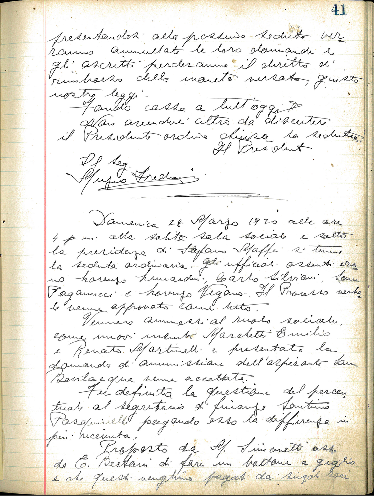Manuscript page number 41.
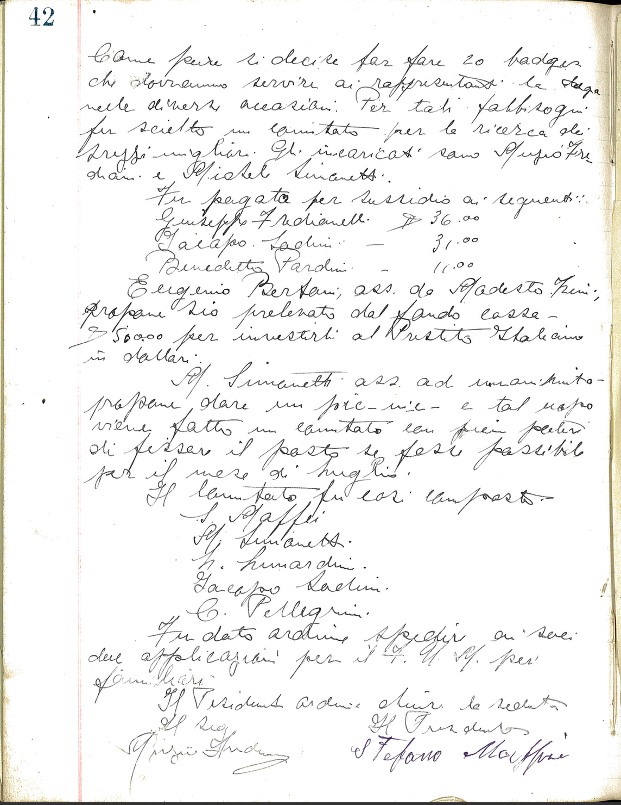Manuscript page number 42.
Domenica 28 Marzo 1920 alle ore
4 p.m. alla solita sala sociale
e sotto
la presidenza di Stefano Maffei
si tenne
la seduta ordinaria.
gli ufficiali assenti era-
no
Lorenzo Lunardini,
Carlo Silvioni,
Sam
Paganucci
e Lorenzo Viganò.
Il Processo verba-
le venne approvato come letto.
Vennero ammessi al ruolo sociale
come nuovi membri
Marchetti Emilio
e Renato Martinelli
e presentate la
domanda di ammissione dell’asperante
Sam
Bevilacqua
venne accettato.
Fu definita la questione del percen-
tuale al segretario di finanza Santino
Pasquinelli pagando esso la differenze in
piu ricevuta.
Proposto da M. Simonetti ass.
da E. Bertoni di fare unbottone a giglio
e che questi venghino
pagati da singoli soci
Come pure si decise far fare 20 badges
che dovranno servire
ai rappresentanti la Lega
nelle diversi occasioni. Per tali
fabbisogni
fu scielto un comitato per la ricerca dei
prezzi migliori.
Gli incaricati sono Muzio Fre-
diani e
Michele Simonetti
Fu pagata per
sussidio ai seguenti:
Giuseppe Fredianelli
$ 36.00
Jacopo
Sodini - 31.00
Benedetto
Pardini - 11.00
Eugenio Bertoni, ass. da Modesto Zini,
propone sio prelevato dal fondo cassa
$500.00 per investirli al Prestito
Italiano
in dollari.
M. Simonetti ass. ad unanimita
propone dare un pic-nic
e tal uopo
viene fatto un comitato con piene potere
di fissare il
posto se fosse possibile
per il mese di Luglio.
Il Comitato fu cosi composto
S. Maffei
M. Simonetti
L. Lunardini
Jacopo Sodini
C. Pellegrini
Fu dato ordine spedire ai soci
due applicazioni per il F.U.M
per
famigliarsi.
Il Presidente ordine chiusa la seduta
Il Seg.
Il Presidente
Muzio Frediani
Stefano Maffei
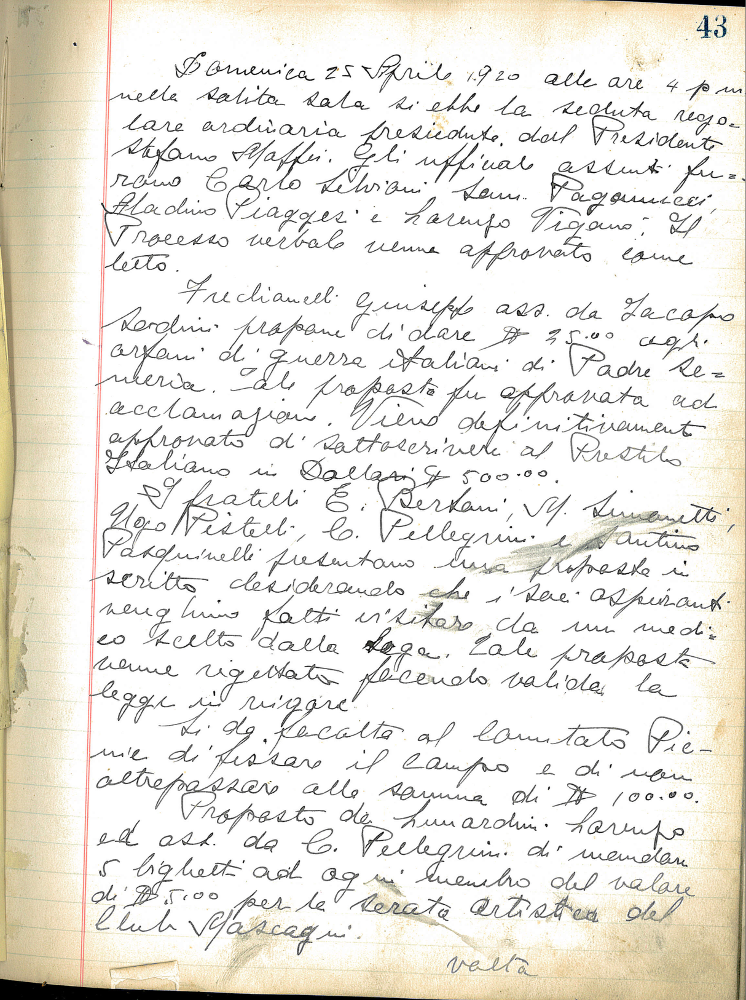Manuscript page number 43.
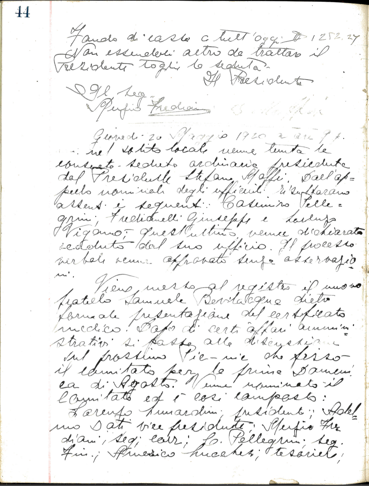Manuscript page number 44.
Domenica 25 Aprile 1920 alle ore 4 pm
nella solita sala si ebbe
la seduta rego-
lare ordinaria presiedute dal
Presidente
Stefano Maffei.
Gli ufficiale assenti fu-
rono
Carlo Silvioni
Sam Paganucci
Aladino Piaggesi
e Lorenzo Vigano'.
Il
Processo verbale venna approvato come
letto.
Fredianelli Giuseppe ass.
da Jacopo
Sodini
propone di dare $35.00 agli
orfani di guerra italiani di Padre
se-
meria. Tale
proposta fu approvata ad
acclamazione.
Viene definitivamente
approvato di
sottoscrivere al Prestito
Italiano in Dollari $500.00.
I fratelli E.
Bertoni, M.
Simonetti,
Ugo Pistelli, C. Pellegrini e Santino
Pasquinelli
presentano una proposta in
scritto desiderando che i soci aspiranti
venghino fatti visitare da un medi-
co scelto dalla Lega. Tale proposta
venne
rigettato facendo valida la
legge in vigore.
Si da facolta al
comitato Pic-
nic di fissare il campo e di non
oltrepassare la somma di $100.00.
Proposto da Lunardini Lorenzo
ed ass. da C. Pellegrini di mandare
5 biglietti ad ogni membro del valore
di $5.00 per la serata artistica
del
Club Mascagni.
volta
Fondo di cassa a tutt'oggi $1252.24
Non essendoci altro da trattare il
Presidente toglie la seduta.
Il Seg. Il Presidente
Muzio Frediani S. Maffei
 Manuscript page number 44.
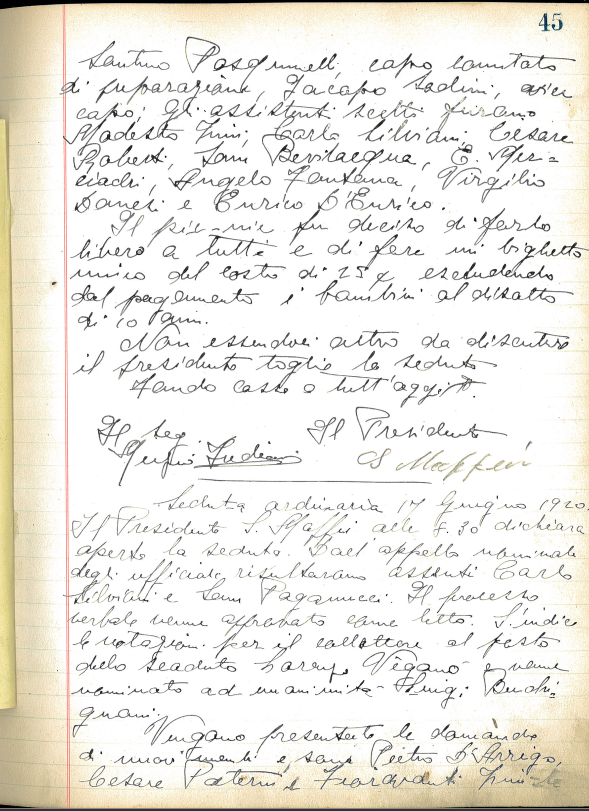Manuscript page number 45.
Manuscript page number 44.
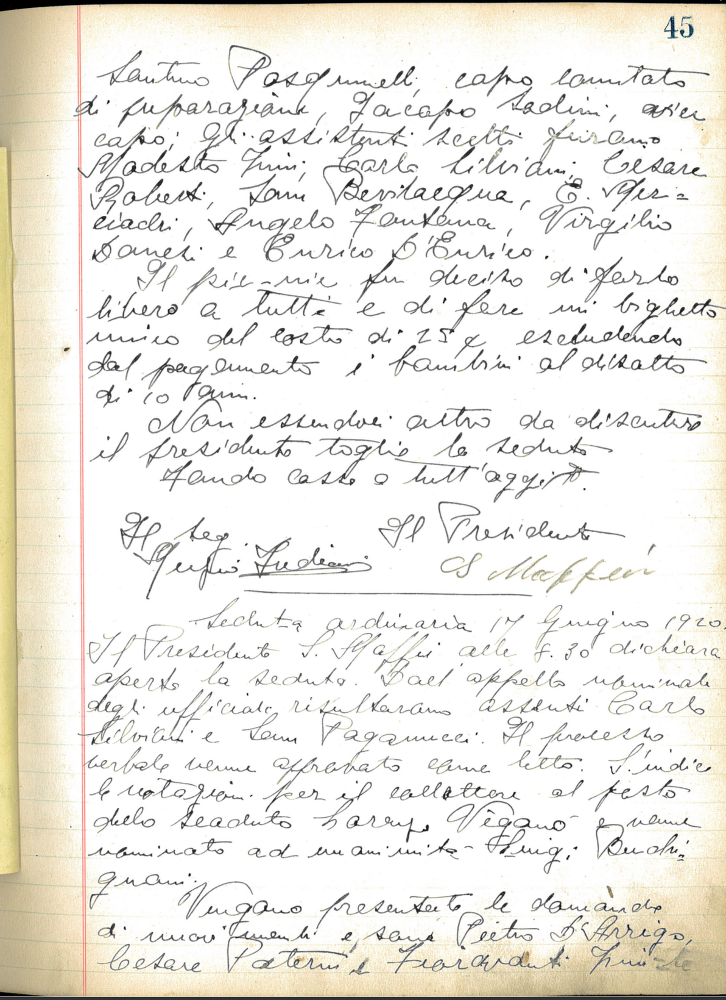Manuscript page number 45.
Giovedi 20 Maggio 1920 a ore 9 p.m.
nel solito locale venne
tenuta la
consueta seduta ordinaria presiedute
dal Presidente Stefano Maffei.
Dall'ap-
pello nominale degli ufficiali risultarono
assenti i
seguenti:
Casimiro Pelle-
grini,
Fredianelli Giuseppe
e Lorenzo
Vigano';
quest'ultimo veine dichiarato
scaduto dal suo ufficio.
Il processo
verbale venne approvato senza osservazio-
ni.
Viene messo al registro il nuovo
fratello
Samuele Bevilacqua dietro
formale presentazione del
certificato
medico. Dopo di certi affari ammini-
strativi si passa alla
discussione
del prossimo Pic-nic che fisso'
il comitato per la prima
Domeni-
ca di Agosto.
Venne nominato il
comitato ed e' cosi composto:
Lorenzo Lunardini, presidente;
Adel-
mo Dati
vice presidente;
Muzio Fre-
diani, seg. corr;
C. Pellegrini, seg.
Fin.;
Americo Lucchesi, tesoriere;
Santino Pasquinelli, capo comitato
di
preparazione,
Jacopo Sodini, vice
capo;
Gli assistenti scelti furono
Modesto Zini,
Carlo Silvioni,
Cesare
Roberti;
Sam Bevilacqua,
E. Mer-
ciadri,
Angelo Fontana,
Virgilio
Danesi
e Curico D'Enrico.
Il pic-nic fu deciso di farlo
libero a tutti e di fare un
biglietto
unico del costo di 25¢ escludendo
dal pagamento i bambini al
disotto
di 10 anni.
Non essendoci altro da discutere
il Presidente toglie la seduta
Fondo cassa a
tutt'oggi $
Il Seg. Il Presidente
Muzio Frediani
S. Maffei
 Manuscript page number 45.
Manuscript page number 45.
 Manuscript page number 46.
Manuscript page number 46.
Seduta ordinaria 17 Giugno 1920.
Il Presidente S. Maffei alle 8.30
dichiara
aperta la seduta.
Dall’appello nominale
degli ufficiale risultarono assenti
Carlo
Silvione
e Sam Paganucci.
Il processo
verbale venne approvato come letto. L’indice
le
votazioni per il collettore al posto
dello scaduto Lorenzo Viganò’ e venne
nominato ad unanimità Luigi Buchi-
guani.
Vengono presentato le domande
di nuovi membri e sono
Pietro D’Arrigo,
Cesare Paterni
e Fioravanti Zini
quali vennero messe a votazione che ri-
sulto favorevole.
Fu concesso 12 giorni di sussidio
al fratello Sam
Marsili
e 8 giorni
al
fratello Lorenzo
Viganò e fu rigettato
il diario del fratello Pietro Baranti per-
ché egli
all’epoca quando cadde amma-
lato trovavasi arretrato coi pagamenti
mensili.
Viene proposta dal fratello Eugenio
Bertoni ed ass. da
G. Fredianelli
d’fare
lo stendardo sociale.
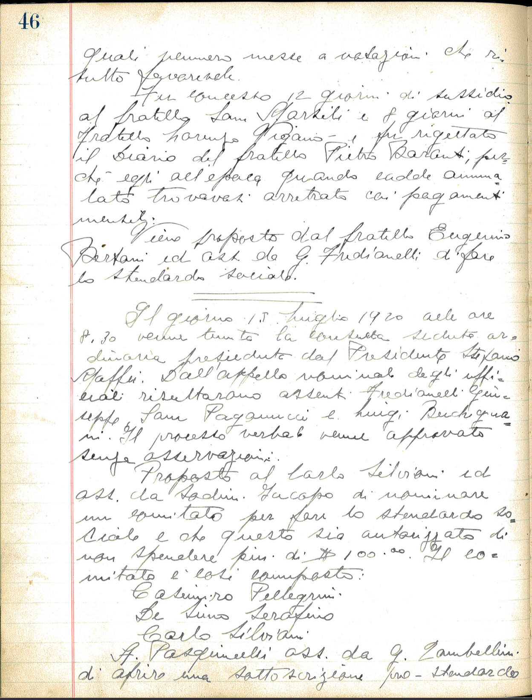Manuscript page number 46.
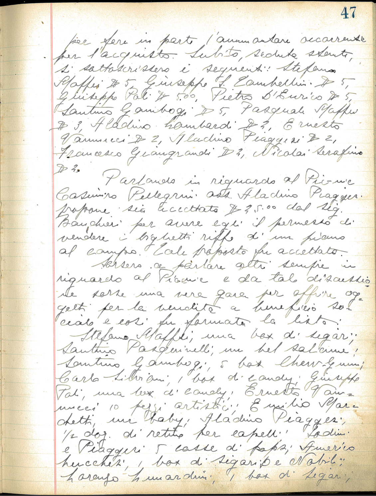Manuscript page number 47.
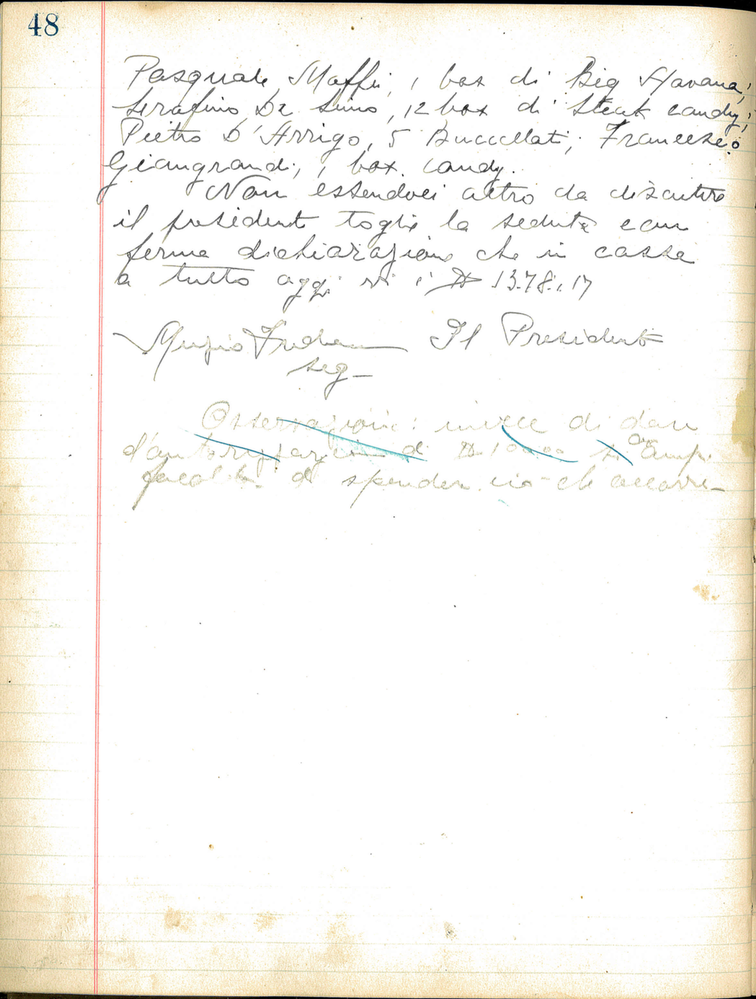Manuscript page number 48.
Il giorno 15 Luglio 1920 alle ore
8.30 venne tenuta la consueta seduta
or-
dinaria presieduta dal Presidente Stefano
Maffei.
Dall’appello nominale degli uffi-
ciali risultarono assenti
Fredianelli Gui-
seppe,
Sam Paganucci
e Luigi Buchigua-
ni.
Il processo verbale venne approvato
senza osservazioni.
Proposta al Carlo Silvioni ed
ass. da Sodini Jacopo di nominare
un
comitato per fare lo stendardo so-
ciale e che questo sia autorizzato
di
non spendere piu di $100.00.
Il co-
mitato e’ cosi composto:
Casimiro Pellegrini
De Simo Serafino
Carlo Silvione
A. Pasquinelli ass. da G. Tambellini
di aprire
una sottoscrizione /uno – stendardo
per fare in parte l’ammontare occorrente
per
l’acquisto. Subito, sedute ssenti,
si sottoscrissero i seguenti:
Stefano
Maffei
$5, Giuseppe L.
Tambellini
$5,
Giuseppe
Pali
$5.00, Pietro
D’Enrico
$5,
Santino Gambogi
$5, Pasquale
Maffei
$3, Aladino
Lombardi
$3, Ernesto
Vannucci
$2, Aladino
Piaggesi
$2,
Francesco Giangrandi
$3, Nicolai
Serafino
$3.
Parlando in riguardo al Pic-nic
Casimiro Pellegrini ass. Aladino Piaggesi
propone sia accettato
$35.00 dal Sig.
Banchieri per avere
egli il permesso di
vendere i biglietti riffe di un piano
al campo.
proposto fu accettato.
Sorsero a parlare altri sempre in
riguardo al Picnic e da tale discussio-
ne sorse una vera gara per offrire
og-
getti per la vendita a beneficio so-
ciale e cosi fu formata la lista:
Stefano Maffei, una box di sigari;
Santino Pasquinelli, un bel salame;
Santino Gambogi, 5 box chew gum;
Carlo Silvioni, 1 box di candy; Giuseppe
Pali, una box di candy; Ernesto Van-
nucci 10 pezzi artistici;
Emilio Mar-
chetti, un baby;
Aladino Piaggesi,
½ doz. di retine
per capelli; Sodini
e Piaggesi 5 casse di pops; Americo
Lucchesi, 1 box di sigari De Nobili;
Lorenzo Lunardini, 1 box di sigari;
Pasquale Maffei, 1 box di Big Havana;
Serafino de Simo, 12 box di Steak candy;
Pietro D’Arrigo, 5 Buccellati; Francesco
Giangrandi, 1 box candy.
Non essendoci altro da discutere
il presidente togli la seduta con
ferma
dichiarazione che in casse
la tutta aggi vi $1378.17
Muzio Frediani Il Presidente
Seg.
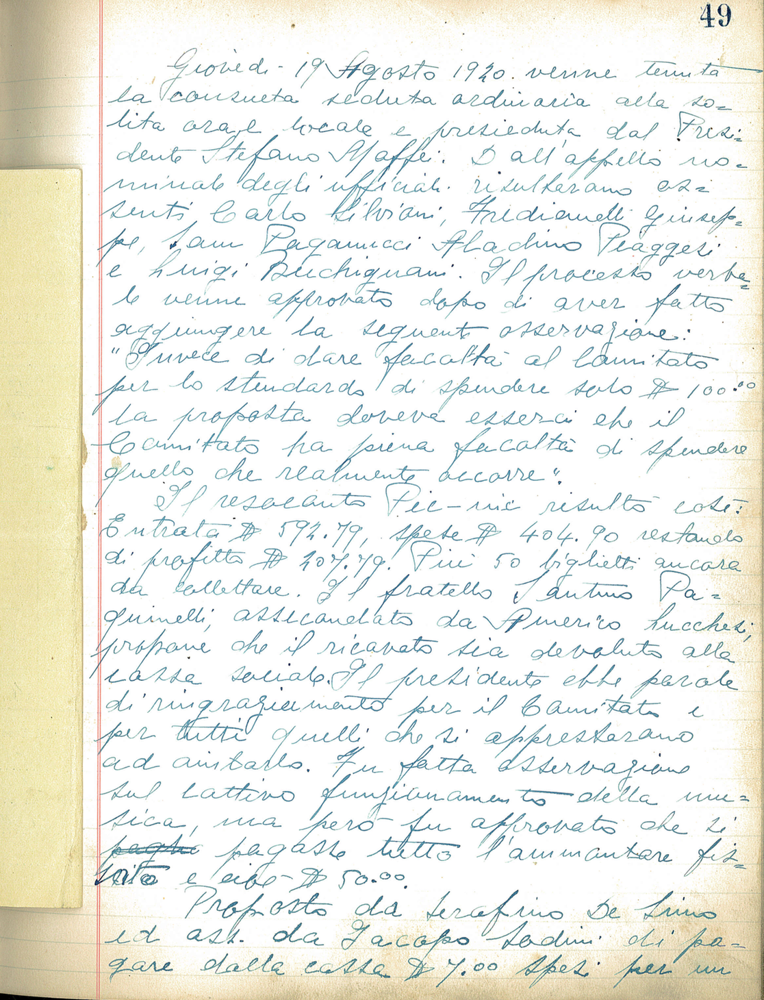Manuscript page number 49.
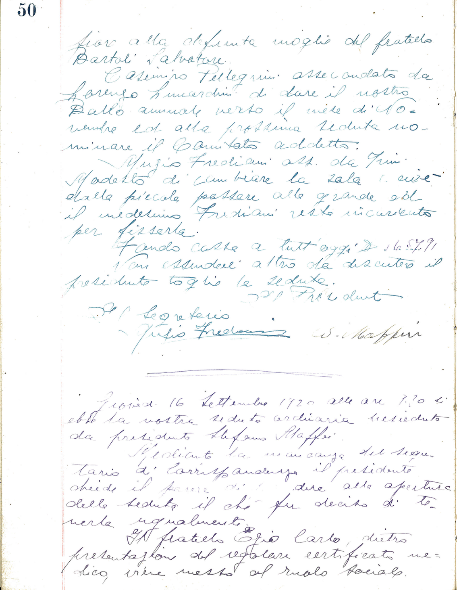Manuscript page number 50.
Giovedi – 19 Agosto 1920 venne tenuta
la consueta seduta
ordinaria alla so-
lita ora e locale e presieduta dal Presi-
dente Stefano Maffei.
Dall’appello no-
minale degli ufficiali risultarono as-
senti
Carlo Silviani,
Fredianelli Giusep-
pe,
Sam Paganucci,
Aladino Piaggesi
e Luigi Buchiguani.
Il processo verba-
le venne approvato dopo di aver fatto
aggiungere la seguente osservazione:
“Invece di dare facoltà al Comitato
per lo stendardo di spendere solo $100.00
la proposta doveve esserci che
il
Comitato ha piena facoltà di spendere
quello che realmente
occorre.”
Il resoconto Pic-nic risultò così:
Entrata $ 592.79, spese
$404.90 restando
di profitto $207.79. Più 50 biglietti ancora
da
collettare. Il fratello Santino Pa-
quinelli,
assecondato da Americo
Lucchesi,
propone che il ricavato sia devoluto alla
cassia sociale.
Il presidente ebbe parole
di ringraziamento per il
Comitato e
per tutti quelli che si appressarono
ad aiutarlo. Fu fatta
osservazione
sul cattivo funzionamento della mu-
sica, ma però fu
approvato che li
pagho pagasse tutto l’ammontare fis-
sato e cioè -- $50.00.
Proposto da Serafino DeSimo
Ed ass. da Jacapo Sodini di pa-
gare
dalla casse $7.00 spesi per un
fiore alla defunta moglie del
fratello
Bartoli Salvatore.
Casimiro Pellegrini assecondato da
Lorenzo Lucardini di
dare il nostro
Ballo annuale verso il mese di No-
Vembre ed alla
prossima seduta no-
minare il Comitato addetto.
Muzio Frediani ass. da Zini
Modesto di cambiare la sala
dalle piccole passare alla grande ed
il
medesimo Frediani resto incaricato
per fisserla.
Fondo casse a tutt’oggi $1657.91
Non essendo altro da discutere
il presidente toglie la Seduta
Il Presidente Il Segratario
Muzio Frediani
S. Maffei
Manuscript page number 50.
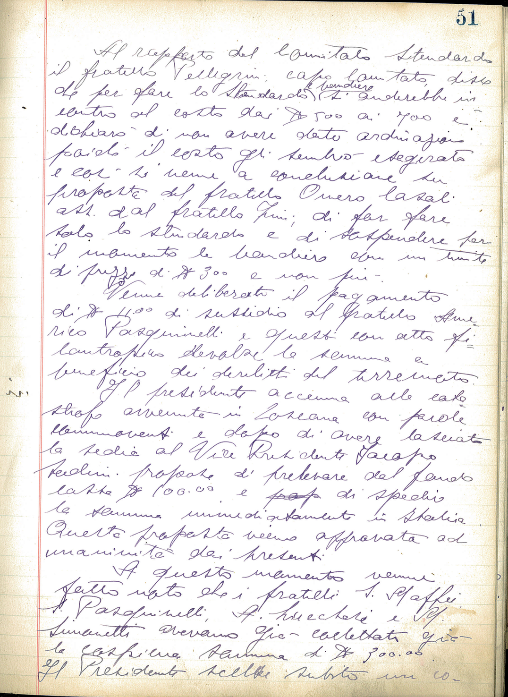Manuscript page number 51.
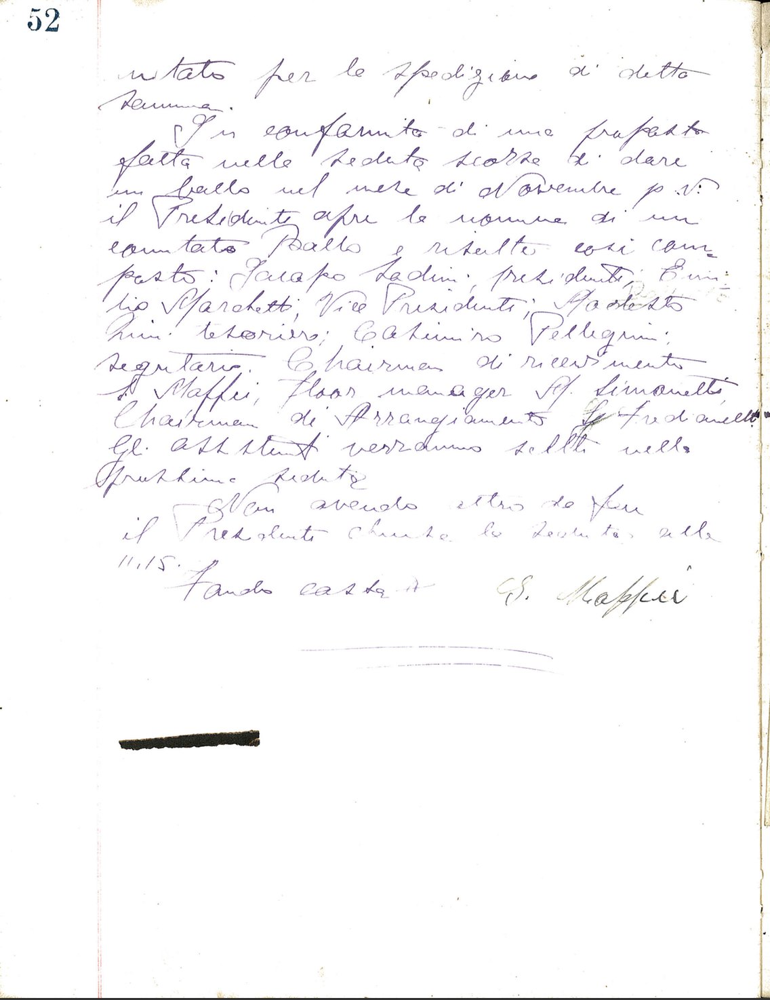Manuscript page number 52.
Giovedi 16 Settembre 1920 alle ore 9:30 li
ebbe la nostra seduta
ordinaria presieduta
da presidente Stefano
Maffei.
Mediante la mancanza
del segre-
tario di Corrispondenza
il presidente
chiede il parere di dire alla apertura
della seduta il chi fu deciso de
te-
nerla ugualmente.
Il fratello Ezio Carlo, dietro
presentazione del regolare certificato me-
dico viene messo al ruolo sociale.
Il rapporto del Comitato Stendardo
il fratello Pellegrini capo Comitato,
disse
che per fare lo Stendardo e bandiere si anderebbe in
centro al
costo dai $500 ai 700 e
dichiarò di non avere dato ordinazioni
poiché il
costo gli sembrò esagerato
E così li venne a conclusione su
proposta del fratello Omero
Casali
ass. dal
fratello Zini, di far fare
solo lo standardo e di sospendere
per
il momento le bandiere con un limite
di prezzo di $300 e non
più
Venne deliberato il pagamento
di $11.00 di sussidio al fratello Ame-
rico
Pasquinelli e questi con atto fi-
lantropico devolse la
somma a
beneficio dei derelitti del
terremoto
Il presidente accenna alle catestr-
ofe avvenute
in Toscana con parole
commoventi de dopo di avere lasciato
la
sedia al Vice Presidente
Jacopo
Sodini
propose di prelevare dal fondo
casse $100.00 e prop di spedi
la somma
immediatamente in Italia
Questa
proposta venne approvata ad
unanimità
dai presenti.
A questo momento venne
fatto
voto che i fratelli S. Maffei,
S. Pasquinelli, A. Lucchese e M.
Simonetti avevano già – collettato già –
la cospicua somma di
$300.00.
Il Presidente scelse subito un co-
mitato per le spedizioni di detto
somma.
In conformità di
una proposta
fatta nello sedute scorse di dare
un ballo nel mese di
Novembre p. V:
Il Presidente apre le nomine di un
comitato
Ballo e risulto cosi com-
posto:
Jacopo Sodini, presidente
Emi-
lio Marchetti, Vice Presidente;
Modesto
Zini tesoriere;
Casimiro Pellegrini:
segretario
Chairman di
ricevimento
S. Maffei,
floor manager
M Simonetti,
Chairman di
Arrangiamento
G. Fredianelli
Gli assistenti verranno scelti nella
prossimo seduto.
Non avendo altro da fare
il presidente chiuse la seduta alle
11.15.
Fondo costa
S. Maffei
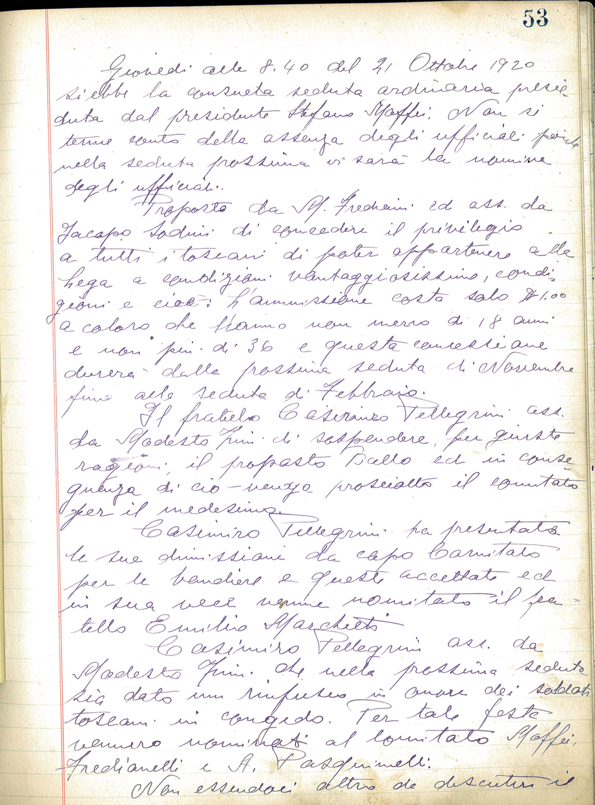Manuscript page number 53.
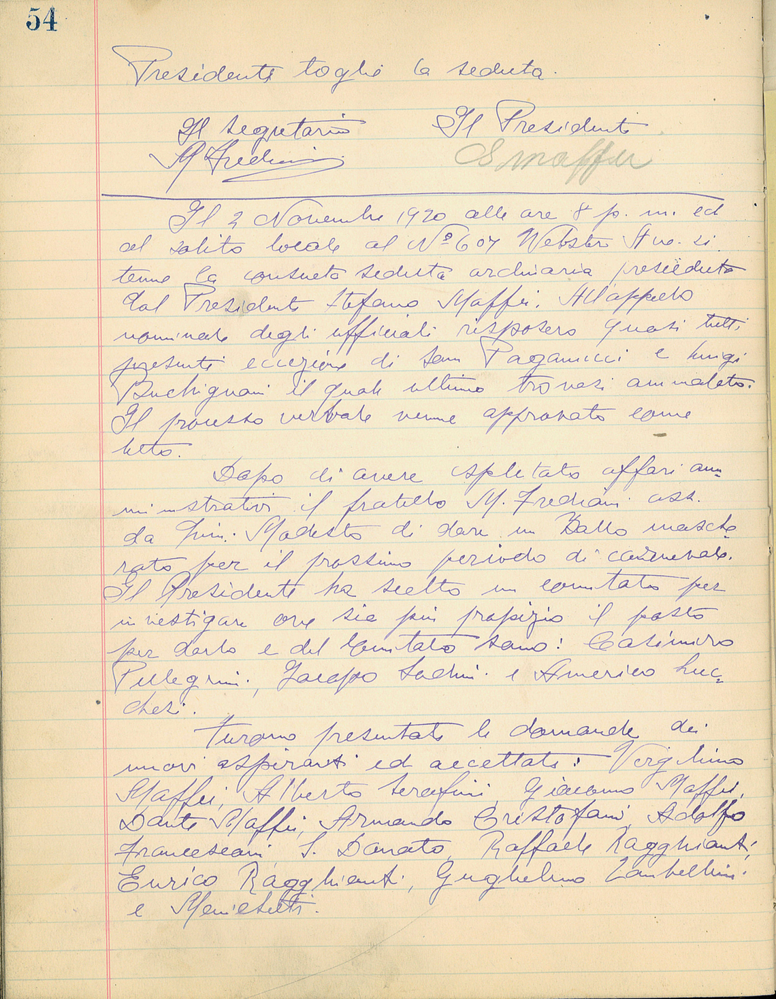Manuscript page number 54.
Giovedi alle 8.40 del 21 Ottobre 1920
si ebbe la consueta
seduta ordinaria presie-
duta dal presidente Stefano
Maffei: Non si
tenne conto della assenza degli ufficiali
perche
nella seduta prossima ci sarà la nomina
degli ufficiali.
Proposto da M. Fredianni ed ass. da
Jacopo Sodini di concedere
il privilegio
a tutti i toscani di poter appartenere alla
Lega a condizioni vantaggiosissimo, condi
zioni e
cioè: L’ammissione costa solo $1.00
a coloro che hanno non meno di 18
anni
e non più di 36 e questa concessione
durerà dalla prossima
seduta di Novembre
fino alle sedute di Febbraio.
Il fratelo Casimiro Pellegrini ass.
da Modesto Zini di sospendere, per
giuste
Ragioni, il proposto Ballo ed in conse-
guenza di cio – venga
prosciolto il comitato
per il medesimo.
Casimiro Pellegrini ha
presentato
le sue dimissioni da capo Comitato
per le Bandiere e
queste accettate ed
in sua vece venne nominato
il fra-
tello Emilio Marchetti
Casimiro Pellegrini ass. da
Modesto Zini che nella
prossima seduta
sia dato un rinfresco in onore dei soldati
toscani in
congedo.
Per tale feste
vennero nominati al comitato
Maffei,
Fredianelli
e A. Pasquinelli.
Non essendoci altro di discutere il
Presidente tagliò la seduta
Il segretario Il Presidente
A. Fredianni
S. Maffei
Manuscript page number 54.
 Manuscript page number 55.
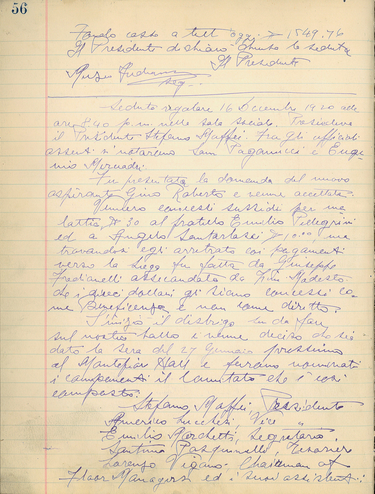Manuscript page number 56.
Manuscript page number 55.
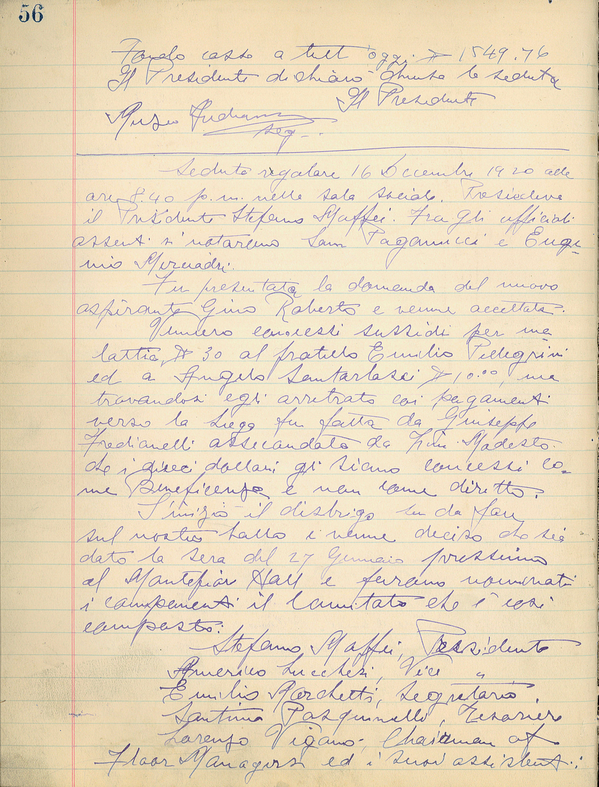Manuscript page number 56.
Il 2 Novembre 1920 alle ore 8 p.m. ed
al solito locale al No 607
Webster Ave. Si
tenne la consueta seduta ordinaria presieduto
dal Presidente Stefano Maffei.
All’appello
nominale degli ufficiali risposero quasi tutti
presenti eccezione di
Sam Paganucci
e Luigi
Buchignani
il quale ultimo trovasi ammalato.
Il processo verbale venne approvato come
letto.
Dopo di avere splitato affari am-
ministrati il fratello M.
Frediani ass.
Da Lui Modesto di dare un Ballo masche-
rato per il prossimo
periodo di carnevale
Il Presidente ha scelto un comitato per
investigare ore sia per propizio il posto
per darlo e del comitato
sono:
Casimiro
Pellegrini,
Jacopo Sodini
e Americo Luc
chesi.
Turano presentato le domande di
nuovi aspiranti ed accettati:
Verghino
Maffei;
Alberto Serafini;
Giacamo Maffei,
Dante Maffei;
Armando Cristofani;
Adolfo
Francesconi;
L. Donato,
Raffaele Ragglianti;
Enrico Ragglianti;
Guglielimo Zambellini
E Marchetti.
Terminato tutto il lavoro sociale il
Presidente dichiare aperte da nomina dei
candidati per le nuove
gestioni 1924 i
viene cosi compilate:
A Presidente
Modesto Zini
Sam Marsili
Giuseppe Tambellini S.
A V. Presidente:
Dati Adelino
Jacopo Sodini
Lorenzo Lunardini
A Secretario
Emilio Marchetti, per acclamazione
A
Seg. di Finanza
Aladino Piaggisi, per acclamazione
A
Curatori:
Stefano Maffei
Giuseppe Fredianelli
Americo Lucchesi
Lorenzo Vigano’
Americo Pasquinelli
A Uff. Sanitari:
Battistini Vincenzo
Ezio Carlo
Eugenio Merciadri
A guardo Sale
E. Merciadri, per acclamazione
Quindi
veniva dato il promesso rui
fresco ai soldati toscani reduce della
guerra che regno’ il massimo entu-
siasmo per tutta la serata
Fondo cassa a tutt’oggi $1549.76
Il Presidente dichiaro’ chiuso la seduta
Il Presidente
Muzio Frediani
seg.
Manuscript page number 56.
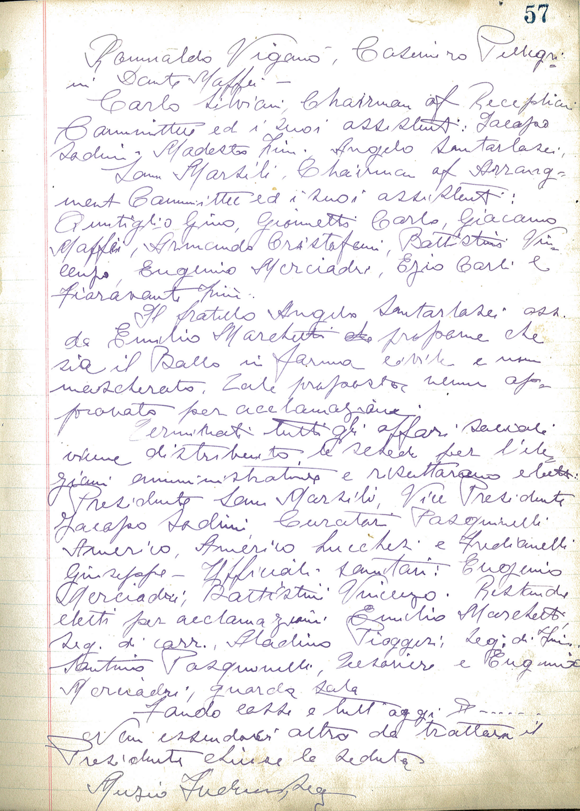Manuscript page number 57.
Seduta regolare 16 Decembre 1920 alle
ore 8.40 p.m. nelle sala
sociale. Presiedeva
il Presidente Stefano Maffei.
Fra gli ufficiali
assenti si notavano
Sam Paganucci
e Euge-
nio Merciadri.
Fu presentata la domanda del nuovo
aspirante
Gino Roberto
e venne accettata.
Vennero concessi sussidi per ma-
lattia $30
al fratello Emilio
Pellegrini
ed a Angelo Santarlasci
$10.00, ma
trovandosi agli arretrato coi pagamenti
verso la
Lega fu fatta da Giuseppe
Fredianelli assecondato da Zini Modesto
Se i dieci dollari gli siano
concessi co-
me Beneficenza e non come diritto.
L’inizio il disbrigo su da fare
sul nostro ballo e venne deciso che
sia
dato la sera del 27 Gennaio prossimo
al Montefiore Hall e
furono nominati
i componenti il Comitato che i cosi
composto:
Stefano Maffei, Presidente
Americo Lucchesi, Vice
Emilio Marchetti, Segretario
Santino Pasquinelli, Tesoriere
Lorenzo Vigano’, Chairman of
Floor
Managers
ed i suoi assistenti:
Ronnaldo Vigano’,
Casimiro Pellegri-
ni
Dante Maffei
Carlo Silvioni
Chairman of Reception
Committee
ed i suoi assistenti:
Jacopo
Sodini,
Modesto Zini,
Angelo
Santarlasci
Sam Marsili
Chairman of Arrange-
ment
Committee
ed i suoi assistenti:
Quintiglio Gino,
Giometti Carlo,
Giacamo
Maffei,
Armando Cristafami,
Battistini Vin-
cenzo,
Eugenio Merciadri,
Ezio Carlo
e
Fiarananti Zini.
Il fratello Angelo Santarlasci ass.
da Emilio Marchetti
che propone che
sia il Ballo in Farma civile e
un
mascherato. Tale proposto viene ap-
provato per
acclamazione.
Terminati tutti gli affari sociali
viene distribuito le schede per
l’ele-
zioni amministrative e risultavano eletti:
Presidente
Sam Marsili,
Vice President
Jacopo Sodini,
Curatori
Pasquinelli
Americo,
Americo Lucchesi
e Fredianelli
Giuseppe
-- Ufficiali Sanitari:
Eugenio
Merciadri,
Battistini
Vincenzo.
Restando
eletti per acclamazioni
Emilio Marchetti
Seg. di carr.,
Aladino Piaggesi
Seg. di Fin.
Santino Pasquinelli, Tesoriere
e Eugenio
Merciadri,
guarda sala
Fondo cassa e tutt’oggi $......
Non essendovi altro da trattare il
Presidente
chiuse le sedute
Muzio Frediani, Seg
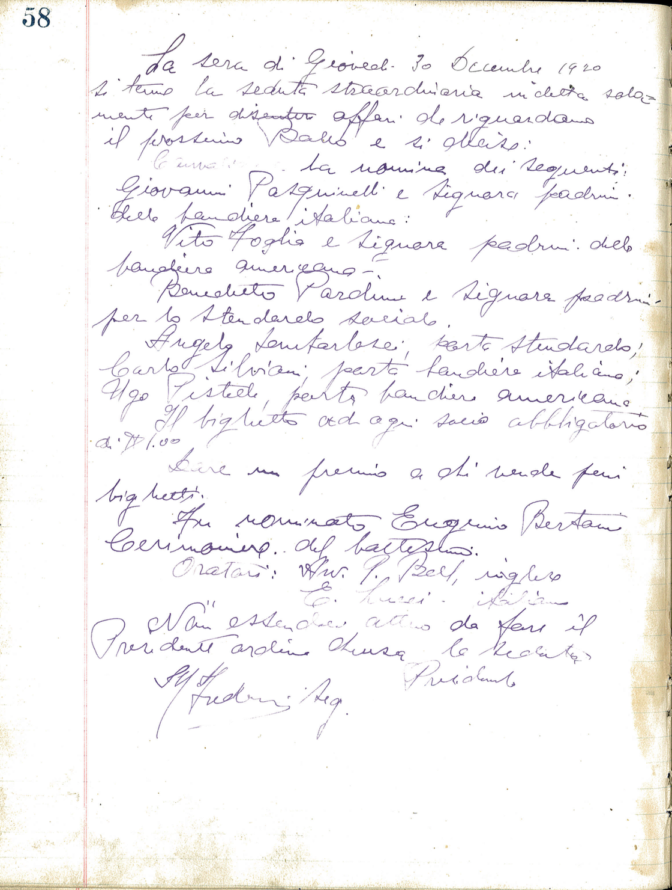Manuscript page number 58.
La sera di Giovedi 30 Dicembre 1920
Si tenne la seduta
straordinaria richiesta sola-
mente per discutere affari che riguardano
il prossimo Ballo e si decise
la nomina dei Seguenti
Giovanni Pasquinelli e Signora
padroni
delle bandiere italiane:
Vito Foglia e Signora Padroni delle
bandiere americane-
Benedetto Pardini e Signora Padroni
per
lo stendardo sociale
Angelo Temfarlasei porta stendardo;
Carlo Silviani porta bandiere italiana;
Ugo Pistelli , porta bandiere Americana
Il biglietto ad ogni socio obbligatorio
di $1.00
Dare un premio a chi
vende più
biglietti
fu nominato Eugenio
Bertoni
Cerimoniere del battesimo
Oratori: Aw. P. Bell, inglese
C. Lucci, italiano
Non essendo altro da
fare il
Presidente ordine chiusa la Seduta
M
Frediani Seg. Presidente